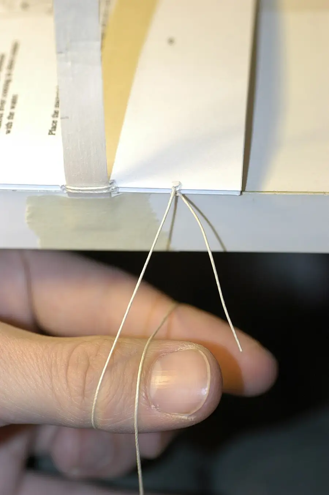

Pamphlet-Stitch Bookbinding Studio
Teens bind a real blank book by hand: folded signatures, a stitched spine, covers cut true. A book is a machine you can make at one table.
Before you begin
- Ages
- 13–14
- Group
- 4–20 kids
- Time
- 50–60 min
- Where
- Indoors
- Prep
- Some prep needed

Setup
Settle the book's size before you settle the room, and settle it small: a first bound book should be finishable entire in one session, pages folded, holes marked, spine stitched, covers on, name written in it, because a bookbinding studio that sends home a folder of loose intentions has taught folding, not binding. Make one complete book yourself in advance, at the table's pace, and keep your own faults in it: the sample that shows a slightly wandering stitch line teaches more than a perfect sample, and the studio will believe a teacher whose book has a history. Lay the sharp station out of the work's flow, a separate table, adult-run, where makers bring a signature for punching and a cover for trimming and wait their turn as at a craftsman's bench, and count its tools out on the studio book's first page before a sheet is folded. Set the table for the work's real order: folding space first, the pattern cards weighted where every maker can see one, thread measured and cut in lengths the pattern states, because thread cut by enthusiasm tangles at exactly the length it was not measured to.
Materials
- paper for the pages, chosen and counted before the session (sheets that fold kindly and take a pen, enough for each maker to bind one book of the studio's stated size, plus the practice sheets the teaching uses, because a first signature folded badly should be tuition, not tragedy)
- cover stock heavier than the pages, cuttable to the book's size with a margin the pattern states (card, heavy paper, or cloth-covered board the site already keeps. Every maker's cover from the same stock family, so the studio's teaching about grain, fold and glue holds for every book on the table)
- the stitching kit, counted out and back by name (blunt bookbinding or tapestry needles, strong thread or linen cord waxed where the site keeps it, and the studio's one sharp station. An adult-run table with the awl and craft knives, where holes are punched and covers trimmed under the adult's hands alone)
- the pattern card and the studio book (one card per book size: fold map, hole positions measured from the fold, stitch order drawn step by step, and the studio's log, where sizes tried, faults found and their causes are entered by the session's keeper, book by book)
Steps
- The framing, a finished book in the host's hands, opened and shut twice so the room hears it work: 'A book is a machine you can make by hand. Spine, hinge, gatherings, covers. Every part of it has a job, every job can be done at this table, and by the end of this session every maker here will have done all of them. We bind blank books today, and blank is the point: a book you have folded, punched, stitched and covered yourself is not a notebook you bought. It is a machine you built, and what gets written in it later will be written in something your hands already know entire. The laws are three. Grain runs with the spine, always, or the book will fight its reader forever. Holes are marked before they are punched, and punched only at the sharp station, by the adult. And a fault found early is tuition, while a fault hidden is a book that fails in a stranger's hands in October, so we show our faults to the table as we find them, and the studio book records them with their causes, kindly and exactly. Fold first. Stitch second. Judge last.' Each maker's paper is counted out in their hearing, the pattern card is read aloud entire once, and the first fold is made by the whole table together, slowly, crease by crease.
- Folding the signatures, the studio's patient foundation: makers fold their sheets into the book's gatherings exactly as the pattern card maps them, fold, crease with the bone folder or a thumbnail's flat, nest the folded sheets inside one another in order, and check the gathering's fore-edge for the stair-step of an honest nest honestly admitted: a gathering folded carelessly climbs out of true a sheet at a time, and the check exists to catch the first sheet, not the ninth. Grain is taught by hand at this stage and never skipped: a sheet torn in the practice pile shows its grain by tearing straight one way and wandering the other, and every maker tears the practice sheet both ways before folding a real one, because grain learned by the hands stays learned. Folded gatherings are pressed under the table's weights while the covers are prepared, a book pressed as it goes is a book that will shut like a book, and the keeper enters each maker's signature count on the studio book as it is completed and checked, in the open, so the sharp station's queue runs on knowledge rather than on whoever is loudest about being ready.
- Marking, punching and stitching, the spine made real: each maker marks their holes from the pattern card, measuring from the fold with a ruler and marking in pencil on the inside of the fold, measured, never eyeballed, because the stitch that follows can only be as true as the holes it travels, then carries the gathering to the sharp station, where the adult punches the marked holes with the awl and checks each one back against the card with the maker watching, so punching is witnessed teaching, not a service window. Back at the table, the stitch is sewn by the pattern card's drawn order, step by step, the whole table sewing the first pass together at the host's counted pace: in, along, out, tension even and never hauled, a stitch pulled to splitting teaches its lesson in a torn fold at the year's middle, and the knot is tied where the pattern puts it, inside the fold's shelter, trimmed to the pattern's length. A stitch that goes wrong is unpicked and resewn while the fault is still cheap; the studio book's law is that a resewn spine is a success recorded, and makers say the fault aloud as they unpick, which is how the next table learns it free.
- Covers and the finishing bench, where the book becomes a book: covers are measured against the maker's own stitched gathering, not against the pattern's promise, against the book in hand, because every hand-made book is its own size by honest millimetres, marked with the pattern's margin, and trimmed at the sharp station by the adult to the maker's own marks, the maker present and calling the measurement. Covers are attached as the pattern directs for the size, stitched through with the spine where the size is slight, or hinged and pasted under the table's weights where the stock is heavy, and every finished book is pressed flat while the studio does its last work, because the press is the binding's final teacher. The finishing law is inspection, done in pairs: each book is opened, shut, opened flat, flexed gently and read for its faults by a maker who did not bind it, a hinge that cracks, a stitch that grins, a cover a fraction shy, and the findings are told to its binder plainly and entered in the studio book with their causes, because a book inspected by a friend leaves the studio with a prognosis, not a hope.
- Closing the studio, the books named and the first page claimed: each maker writes their name and the date inside their own book, on the pattern's chosen page, in their best hand, the binder's mark, the oldest page in any book's life, and the books are gathered for one minute on the table together, a row of machines built in an hour, spines out, no two exactly alike and every one of them a book. The keeper reads the studio book back: sizes bound, faults found and their causes entire, sharp-station tool count in against the morning's count out. The tell-back is said with the books still in their makers' hands: 'This morning this table held flat paper, flat card and a ball of thread, and none of it would have survived being called a book. Now every maker here holds a machine they built entire, grain with the spine, holes measured before they were punched, a stitch sewn true and inspected by a friend, a cover cut to the book in hand and not to a promise. What goes into these books from here is their makers' business. That the books will hold it, open flat for it, and still be books in October. That was today's, and it is done properly.' Tools are counted back by name, offcuts go to the practice pile for the next studio's grain lessons, and the studio book is stored with the pattern cards where the next binders will find the whole craft in one place.
Variations
Easier: A single-signature version (a first studio or a short session): the whole discipline at one gathering's scale, fold, mark, punch, stitch, cover, inspect, sign, a slighter book bound entire, with the studio book opened and the laws stated in full.
Harder: A cloth-spine version (a returning studio): the same binding with a reinforced spine strip of book cloth or heavy tape laid under the stitching, covers in contrasting stock, and the studio book comparing the two constructions' inspection findings side by side, a second year, argued from evidence.
Safety
Sharp points set this studio's laws and they are geographic: the awl and the craft knives live only at the sharp station, are used only by the adult, travel point-down in the tray between uses, and are counted out and back by name at the session's start and end. A count that does not agree stops the tidying until it does. Makers' own tools are blunt by design: tapestry needles for stitching, scissors where the pattern needs them used at the maker's own place, point-down in their pots when hands leave them, and thread is cut, never bitten, never snapped toward a face. Paper cuts are this craft's small honest hazard and the studio treats them without drama and without neglect: a cut is washed, dried and covered before work resumes, and a maker keeps working one-handed or keeps the studio book for ten minutes, at their own election, because thread and a stinging hand are a combination that produces bad stitches and worse tempers. Paste and glue, where the size uses them, stay at the finishing bench in their pots, off the folding tables, and hands that have handled them are washed before the books' pages are touched, a glue thumbprint on a first page is forever, and the studio's order of work exists to prevent exactly that sentence.
Source: not listed yet.
Inclusion notes
A binding table is a row of seated, measured crafts at full standing, and the studio staffs it as such: the keeper's chair, signature counts, fault causes, the tool tally, is the session's memory and conscience, and inspection pairs are formed so that every book is read by hands other than its binder's, which makes the inspector's office, flexing, opening, reporting true, a position of trust open to any maker at the table. Folding, marking and stitching can all be done from whatever seat and at whatever table height a maker works best at; holes are always punched at the adult's station, so no maker's access to the sharp work depends on their own hands' strength or steadiness, the law that reserves the awl to the adult is an inclusion as well as a safety, and the framing says both halves of that aloud. The pattern card is drawn large and read aloud entire before the first fold, stitch order is demonstrated at a pace the whole table follows and repeated on request without ceremony, and a maker may dictate their studio-book entry, have their holes marked by a partner at their direction from their own measurements, or sew with a needle threader and a thimble from the kit the table keeps as ordinary equipment. Nobody's book is compared with another's except by the inspection's own terms, does it open, does it hold, will it last, and the closing row is spines out and makers unnamed unless a maker chooses to show their binder's mark, because the first page of a person's book is theirs to show or to keep.
Tried this? Rate it
Your ratings live in this browser only. Nobody else can see them. There are no community ratings here; every star on this card is yours.
Rate this activity, add a note, or write a reflection
Quick reflection
Optional, saved with your rating, and exported with "Copy my week".
Full activity card,